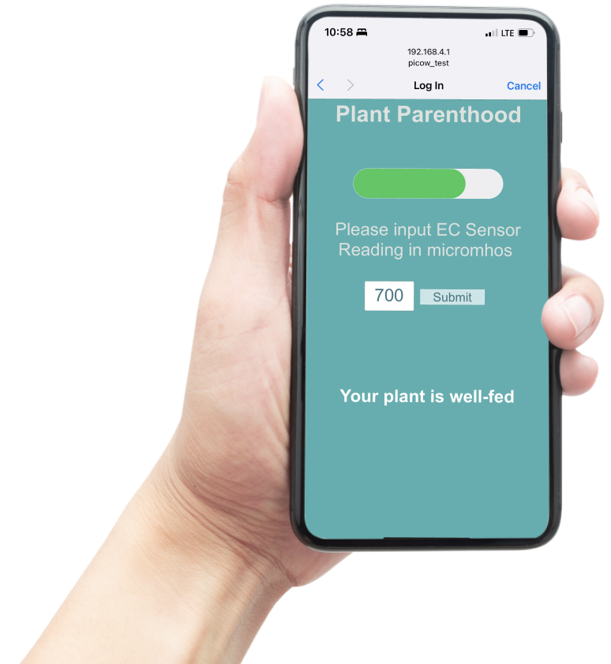
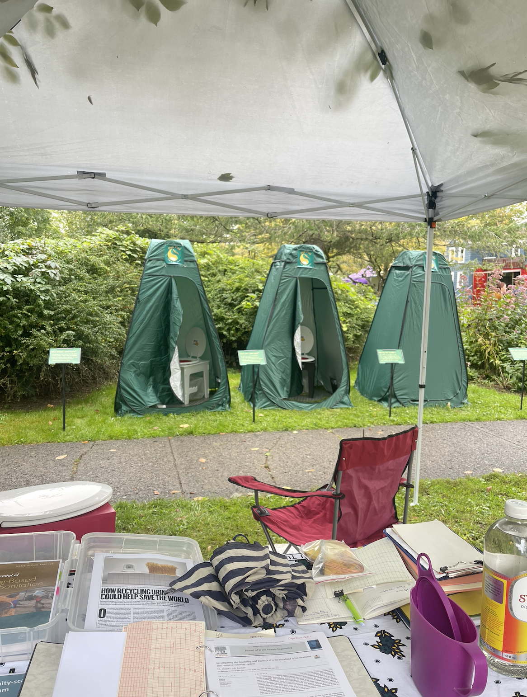
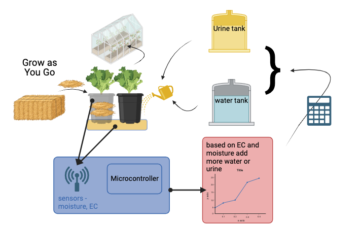
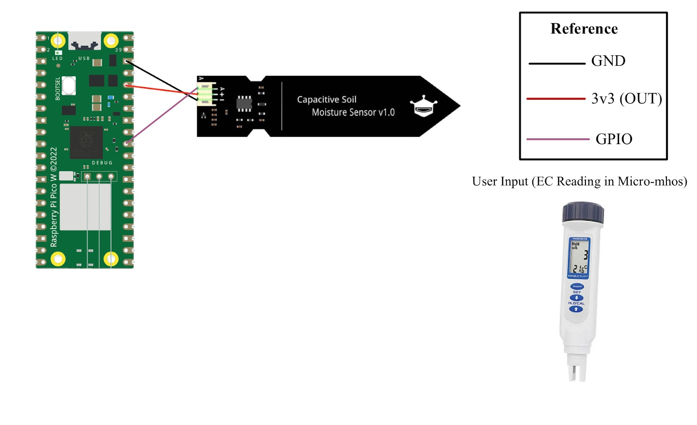
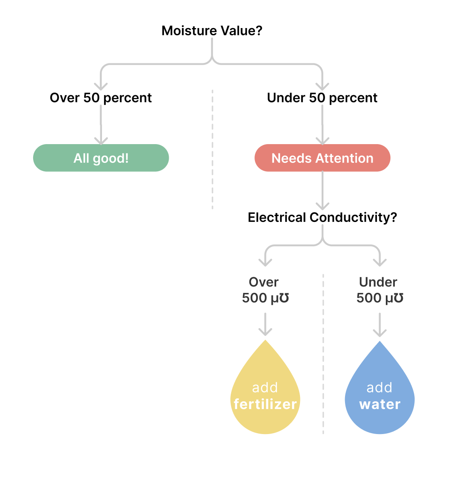
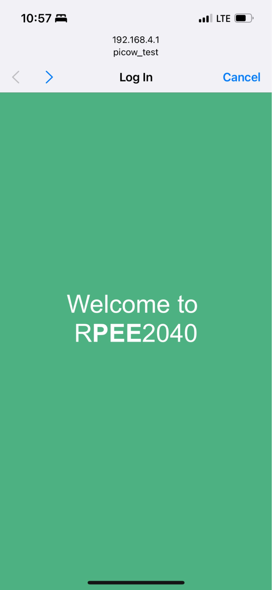
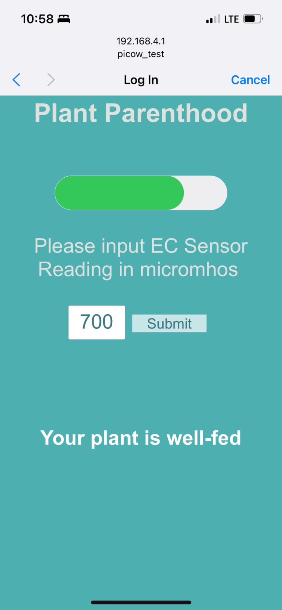
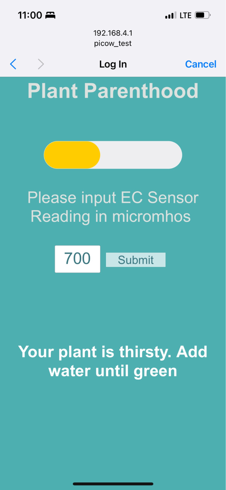
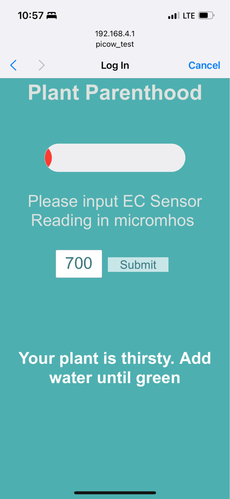

Project Introduction

An at-home plant kit with a twist!
Our final project RPee2040
is an at-home plant kit that monitors and displays the health of your plant using the
Raspberry Pico W, capacitive and electrical conductivity sensors, and a web interface. This project is part of a
larger Grow as You Go initiative led by Professor Rebecca Nelson and her team in Cornell University's College of
Agriculture and Life Sciences where they are conducting extensive research regarding the peecycle and using
human
urine as a natural fertilizer.
 This project emerged after a coincidental encounter with Professor Rebecca Nelson at the 2023 Ithaca Porchfest, where she had set up PeePod tents to collect samples for her research. After an enlightening conversation about her team's research in the peecycle, we reached out to see how we could contribute to their sustainability efforts and together, we established the foundation of our project outline and were able to shape it from there.

Working with the research team, we learned about a few of their many interesting projects and found that we
could
make the greatest contributions in their "Grow as You Grow" initiative where they use urine and biochar to
compost materials while growing plants. Our contribution to this initiative would be in the design and
development
of a
system capable of determining and communicating to a user when to add urine and when to add water to their
plant.
To do this, we used electrical conductivity measurements from the plant's leachate as well as moisture level
measurements from its soil as inputs into a calibrated control flow that would then output a representation of
the
plants health.
While the subject of sustainability, specifically surrounding the peecycle, was an area of interest for us, it
was
also novel, and the beginning of this project involved many conversations with the research team as well as
extensive research to sequentially understand the background and the use-case and then immerse ourselves in the
design of our product.
From our research and conversations, one aspect became consistently apparent: the value of the user's
experience.
We found that the effective communication of the plant's health to the user was one of the most important steps
in
the use of our product in order to fully accomplish our goal of sustainably fertilizing and caring for one's
plant. Recognizing the importance of this, we began molding the project with our user's experience at the
forefront of our thoughts.

Our system fundamentally accepts two inputs and produces one output. These inputs consist of the soil's moisture
level, in percent, and the leachate's electrical conductivity level, in micromhos, while the output is a message
communicating to the user how best to care for their plant by watering, fertilizing, or neither.
The soil's moisture level is acquired from the Capacitive Soil Moisture Sensor through an on-board pin connected
to the Pico's built-in Analog to Digital Converter (ADC). Utilizing the stdlib.h and adc.h libraries in the RP2040
Software Development Kit (SDK), we initialized the ADC, configured the specific General Purpose Input/Output
(GPIO) pin to read the moisture value as input, and we finally read the converted analog input as a digital value.
Aside: A capacitive soil moisture sensor measures the dielectric constant of the soil it is placed in, which is
variable to the moisture content of the soil. The sensor itself has two electrodes and the soil affects the
capacitance between the two. Dry soil means there is a low dielectric constant indicating lower capacitance. On
the contrary, wet soil has a higher dielectric constant indicating higher capacitance. The sensor requires a
calibration process which is needed for an accurate reading. We took readings in dry soil, wet soil, water, and
air in order to establish a general relationship between the sensor readings and known moisture content.
The leachate's electrical conductivity level is acquired through user input in an app-like interface. To allow for
this user input functionality, we used a Raspberry PicoW built off of Professor Bruce Land's existing project,
which establishes the microcontroller as a WiFi access point, allowing the user to interact with the system
through a web interface. The interface graphics are built using HTML, the website requests, reloads and forms are
implemented in JavaScript, and the logic flow taking in soil moisture and leachate electrical conductivity levels
are executed in C.

The logic flow is designed using a series of conditions governed by the soil's moisture and leachate's electrical
conductivity levels. It proceeds as shown in the flowchart.
* From calibration, we found an adequate moisture threshold of 50% and an adequate electrical conductivity
threshold of 500 micromhos.
Effectively communicating the plant's care instructions to the user is the final and most important step in the
plant kit's process. After various iterations and demonstrations to representative users, we found that one main
webpage facilitating the flow of input and output data to and from the user poses the most effectiveness. Among
the many graphic components, the two essential articles within this main webpage are the user's input space for
the leachate's measured electrical conductivity and the output message, consisting of a meter and text, to the
user for how best to take care of their plant. When either a user inputs a new electrical conductivity value or
the moisture level of the soil changes, the webpage updates to display a new, tailored output message. Through
user research, we found the user's experience to be correlated with the webpage's reaction speed. To decrease the
reaction time, we experimented with both calibrating a faster automatic reload of the entire webpage or
automatically reloading the section of the page that displays the output. As of now, the automatic section reload
has not been able to function properly, and we're currently running the automatic entire page reload, but this is
an area of improvement we are looking forward to achieving.




Putting each of the moving parts together, we have a prototype of a modern plant-kit which contributes to "Plant
Parenthood" and sustainability. Along with a purposeful user experience, accuracy and safety are principal
elements we continue to strive to achieve in our design, and we evaluated each of these through different testing
strategies.
Our layout for testing this initial prototype was by arranging three pots of soil corresponding to low, medium and
high moisture content and launching the plant-kit to evaluate the accuracy of our logic as well as usability. For
the purposes of testing the early stages of this product, we used salt water in place of human urine for both
sanitary safety and sustainable testing.
We evaluated the accuracy of our product through multiple steps. In the first stage, we printed the raw values of
our sensor measurements in both the serial monitor as well as the webpage to ensure continuity. From there, we
narrowed the testing to examine the output message on the web page in each possible situation, including
edge-cases, ensuring the plant-kit exhibited expected behavior throughout. A possible situation could consist of a
dry pot of soil which has leachate with an electrical conductivity measurement of 450 micromhos. In this case, the
expected behavior would be for the web page output message to indicate that the plant needs fertilizer.
Ultimately, this communication must be clear, effective, and efficient. Testing with users representative of our
target audience surfaced these ideas: quickly communicating what to pour and its relative amount, a means of
communicating this by being color-blind inclusive, while also incorporating earthy and cool-toned colors as a
reminder of the sustainability efforts.
In this prototype we attempted to incorporate the first two ideas through the combination of text and graphics. In
this attempt we included a message at the bottom of the screen with a slightly brighter font color, as an eye pop
to indicate importance, while simultaneously displaying a color-coded meter, which illustrates the soil's moisture
content, in percent. Throughout our demonstrations, the combination of the text and meter proved to be crucial for
the user's understanding of what to do. When the user needs to pour either liquid, the meter displays either
yellow or red, depending on the moisture level, and the text informs the user of which liquid to pour until the
meter displays green, indicating that the plant must not consume more liquids. The meter was implemented intending
to be a color-blind inclusive design through the visual use of displaying the amplitude corresponding to the
changing colors, red, yellow and green, allowing the user to see both the amplitude change, as well as the color
change, as visual confirmation of the plant's health.
The final idea that surfaced from user testing regarding our theme colors was an interesting topic of
conversation. Our colors began as bright green and beige, but soon we began using color theory and presenting
various color combinations to different users and found a consistent emphasis on the importance of using bright
but muted earth tones to continue to communicate the message of the research through the themed colors.
An additional aspect of the user's experience which is an ongoing part of the experience we intend to attain is
the automatic reload of specific sections of the webpage. Currently, we have successfully implemented the
capability of automatically reloading the webpage on a specified interval, but this places a slight delay between
the input and the user's access to the output information, and is a feature we continue to inquire into improving
for our users.
Conclusions
Overall, we are very proud of our prototype of the RPee2040 and are excited to see how it can grow. We achieved a
system capable of collecting both GPIO-input and user-input to ultimately instruct a user on how to take care of
their plant using human urine as fertilizer. Moving forward, two new aspects that would be interesting to
incorporate would be to use urine as fertilizer specific equations tailored to our inputs and to develop the user
interface as a cloud-based mobile application accessible to download. Using specific equations would guarantee
specific and quantifiable results that would aid in evaluating plant health data, while a cloud-based mobile
application would both allow for an easier experience for the user by eliminating the step of logging into the
hosted WiFi, but also allow for the research team to acquire the data, through the cloud database, from a large
network of users.
We'd like to give a huge thank you to Professor Rebecca Nelson, Professor Hunter Adams, and Professor Bruce Land,
and of course Lucinda Li and Krisztina Mosdossy for their incredible help and support in this journey. And a
specific huge thank you and shoutout to Professor Bruce Land for his help in teaching and providing the groundwork
for the lightweight IP network protocol that served as the foundation that enabled our webpage interface.
* The name RPee2040 was created by Professor Bruce Land!